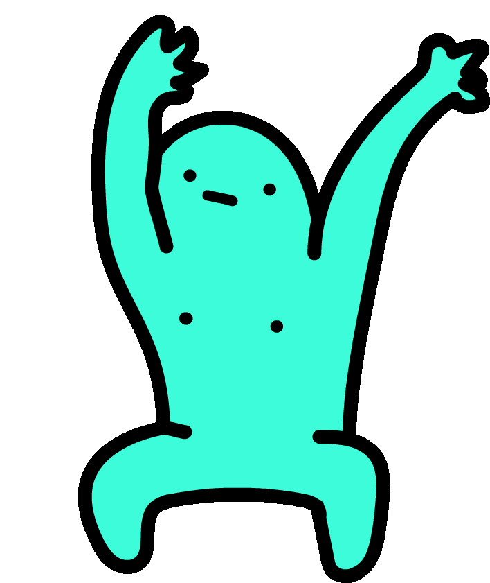

Eu Multimídia
Caio Poschardt Antunes Mello
Esta breve página feita com html e css serve para apresentar um pouco de mim utilizando os recursos aprendidos no lab 1.
UFABC
Ingressei na UFABC em 2015 e desde então já pensei em prestar diversos cursos. Hoje, estou decidido a finalizar apenas 3.
- Engenharia de Informação
- Bacharelado em Ciência da Computação
- Licenciatura em Matemática
P.S.: Apesar de me interessar muito sobre os temas da Engenharia de Informação, atuo na área do BCC.
Hobbies
Me interesso por diferentes áreas:
- Música
- Programação
- Bicicleta
Gosto muito de música e desde pequeno arranho o violão, apesar de nunca sair do básico. A música abaixo não tem relação alguma comigo, mas é hilária:
Durante o ensino médio, fiz curso técnico em informática e me apaixonei pela programação. Após um bom tempo parado, voltei a programar por demanda do emprego e
hoje utilizo parte do meu tempo livre para me aprimorar. Ultimamente tenho estudado programação de jogos em C#. Abaixo segue o link para o site da Unity.
Apesar de estar não praticar ultimamente por estar limitado pelo tempo livre escasso e pelas condições referentes ao COVID, gosto muito de andar de bicicleta
pois acredito ser uma boa forma de se exercita e conhecer novos lugares.
Final
Obrigado por ter lido até aqui! Tchau!
